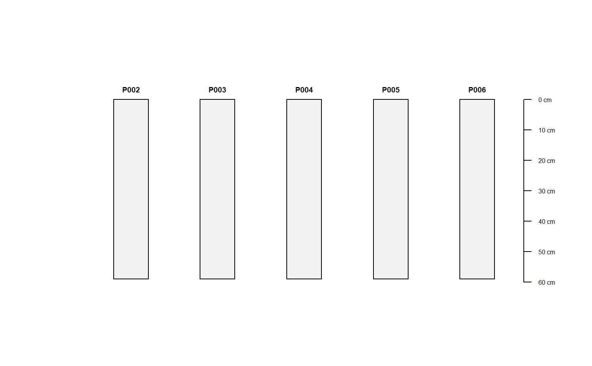

R/spc2mpspline.R
spc2mpspline-SoilProfileCollection-method.RdFacilitate safe use of just about any numeric SPC horizon attribute, from any SPC, with mpspline2::mpspline. Currently only works with a single attribute.This function will automatically filter profiles with NA in attribute of interest which may be more conservative filtering than you expect. The intention here is that a SPC of related profile instances could be splined, and then the spline results aggregated over the full interval where data was available.
Data completeness is assessed and the input SPC is filtered and truncated to create a container for the 1cm results from mpspline2::mpspline.
# S4 method for SoilProfileCollection spc2mpspline( object, var_name = NULL, pattern = "R|Cr|Cd|qm", hzdesgn = guessHzDesgnName(object), ... )
| object | A SoilProfileCollection |
|---|---|
| var_name | Column name in |
| pattern | Regex pattern to match for bottom of profile (passed to estimateSoilDepth) default: "R|Cr|Cd|qm" |
| hzdesgn | Column name in |
| ... | Additional arguments to |
A SoilProfileCollection with 1cm slices. Spline variables are in columns prefixed with "spline_" and RMSE/RMSE_IQR are in colums prefixed with "rmse_". If any profiles were removed from the collection, their profile IDs are stored in attr(result, 'removed').
Andrew G. Brown
#>#>